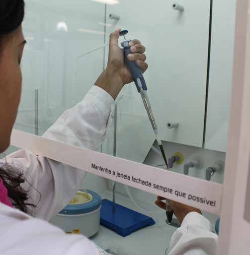

Our Scientific Services
Accelerating technology transfer from the laboratory to commercial value.
Research
Thousands of good ideas, new techniques, and processes with incommensurable value are produced daily by university researchers.
Unfortunately, most of this precious knowledge is not valorized and converted into something with real commercial value because the necessary development is out of scope. MadeBiotech helps researchers and institutions without valorization centers get returns from their intellectual portfolio.


Development & Scale-up
Besides our own projects, we develop research for our customers in our labs and facilities with guarantees of confidentiality and discretion. This solution allows SMEs to innovate and adapt without major investment.